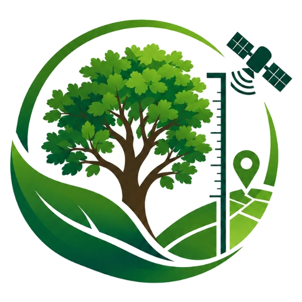

පැල සහ වෘක්ෂලතා දත්ත පූරණය වෙමින් පවතී...
An advanced digital botanical monitoring and GIS mapping platform dedicated to tracking, conserving, and cataloguing the flora of Sabaragamuwa University of Sri Lanka.
Smart Botanical Mapping, Real-time GPS Location Tracking, Scannable QR Badges & Carbon Sequestration Registry.
Sabaragamuwa University of Sri Lanka
The objective of the BSc Honours in EcoBusiness Management degree programme is to provide the industry with managers who are capable of performing environmentally friendly business operations.
Sabaragamuwa University of Sri Lanka (SUSL) is situated in the scenic and ecologically unique landscape, nestled against the foothills of the central highlands and the Samanalawewa watershed basin. This geographical setting provides habitat for diverse endemic, indigenous, and medicinal plant species.
DIGITAL ECO MANAYA was conceptualized to transition campus botanical management from traditional manual registers to a real-time, interactive, and transparent digital monitoring ecosystem. Through precision GPS mapping, high-resolution photographic archival, and automated botanical record-keeping, every single plant on campus is catalogued and tracked across its complete growth lifecycle.
Digital Eco Manaya project aims to develop a Smart Tree Planting Project by monitoring planted trees through a digital platform. The platform will enable us to track tree growth, health, location, and other important information digitally, ensuring effective long-term monitoring and sustainable tree management.
Establish a high-precision GIS inventory of every tree across all SUSL faculties with exact GPS coordinates (Latitude & Longitude), spatial clustering, and satellite layer views.
Track live physical conditions (Thriving, Healthy, Needs Attention, Critical) with disease records, pest detection, and watering logs to ensure rapid remedial care.
Quantify carbon sequestration based on tree height and trunk DBH allometrics, supporting national climate goals and university sustainability certifications.
Generate durable printable QR badges for physical campus trees, allowing students and visitors to scan with smartphones and instantly access complete botanical facts.
Foster active environmental responsibility by assigning student societies and faculties as designated caretakers for specific campus flora groves.
Provide seamless one-click export to CSV (Excel) and JSON standards, fostering open environmental data sharing and multi-year comparative studies.
Explore monitored trees on the interactive campus map, filter by faculty zone, or register new plants.